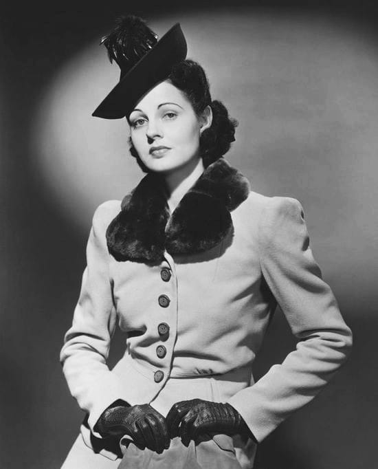

Carol Obsidian vivió la vida como ella queria. Las dificultades que enfrentó como joven huerfana y sus exitos como mujer consagrada de negocios hicieron de ella una persona extravagante, atrevida, libre y sobre todo soñadora. Todos sus conocimientos sobre moda lo obtuvo a partir de sus grandes amistades y a su gran amor, compañero de toda la vida Carlos Magno. Todo ello formó su fuerte personalidad y hizo de su pasión sobre la moda, una visión para la mujer de todas las partes del mundo. Un espacio en donde la ropa se hacia parte de la mujer haciendola libre, elegante y femina.
La misión de Obsidian es llevar nuestros modelos de trabajo al maximo de rincones del mundo posible, para que todo el mundo pueda disfrutar de la moda y el mejor diseño. Velas por la calidad de nuestras prendas y el servicio que ofrecemos a nuestro clientes.
Ser lider en el mundo de la moda, imparciendo los valores de Carol Obsidian en dar lugar a las mujeres expresar su personalidad y elegancia en sus prendas, darles un elemento indispensable para resaltar su belleza. Ofrecer a nuestros empleados el mejor clima laboral para que se desarrollen con naturalidad y eficiencia.
© Obsidian S.A 2023 Todos los derechos reservados